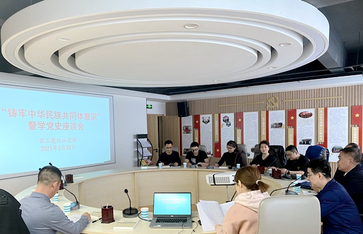

2021年3月28日，农工党赤峰市红山区支部委员会召开“铸牢中华民族共同体意识暨学党史座谈会”。
党员们回顾了农工党同中国共产党团结合作、共同奋斗的光辉历史，并围绕铸牢中华民族共同体意识开展座谈。
大家一致认为，铸牢中华民族共同体意识关键在于通过历史学习和思想领悟，提高工作水平、增进文化自觉，促进各民族相互尊重、相互借鉴，美人之美、美美与共，建设各民族共有的精神家园。铸牢中华民族共同体意识，离不开文化的滋养，中华文化源远流长，是把中华民族紧紧凝聚在一起的文化纽带，只有传承和发展中华优秀传统文化，才能不断增强中华民族的向心力和凝聚力。
支部要求党员们要深入学习贯彻习近平总书记关于民族工作的重要论述，精准把握核心要义，坚决把思想和行动统一到中共中央决策部署上来，积极发挥农工党党员智力优势，助力推进赤峰市民族团结模范市建设，确保民族之花在赤峰市常开长盛。
近20名党员参加了座谈会。